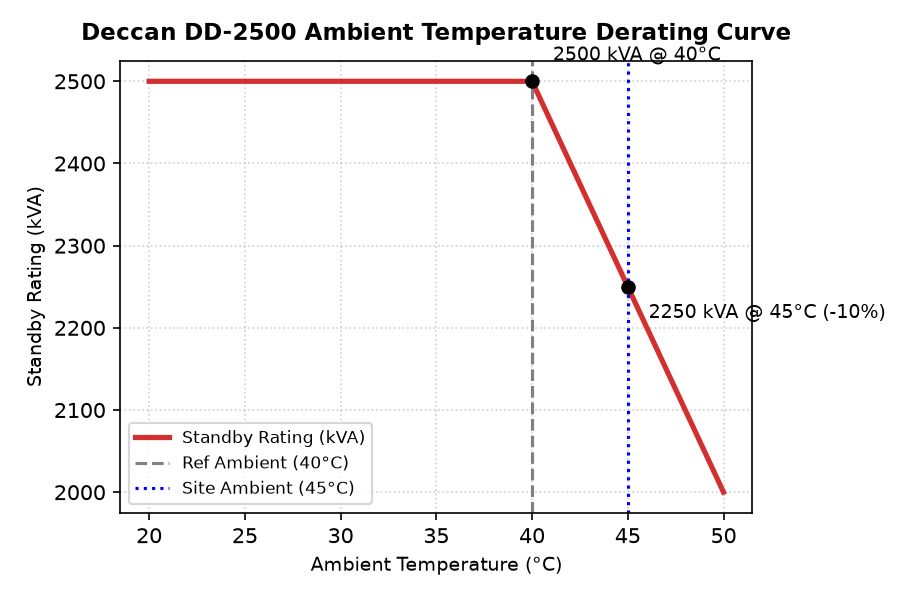

| Transmittal No: | Date: | ||
| Project: | Meridian Data Centre Campus, Phase 1 | Spec Section: | 26 32 13 |
| Vendor: | Deccan Diesel Co. | Revision: | |
| Status: | FOR REVIEW | EPC Lead: | YOU Electrical |
We submit for engineering review and approval the product datasheet, compliance matrix, and test certifications for the following equipment:
| Model Number | Description | Qty | Manufacturer |
|---|---|---|---|
| Deccan DD-2500 | Deccan DD-2500 Standby Diesel Generator Set | 16 | Deccan Diesel Co. |
The Deccan DD-2500 is a premium standby reciprocating diesel generator set rated for 2500 kVA standby power at 50Hz, 1500 RPM. Designed with robust transient response capabilities conforming to ISO G3 standards.
| Parameter Name | Claimed Value | Claimed Condition | Spec Limit |
|---|---|---|---|
| Standby rating kva | 2500.0 kVA | at 40C reference ambient | 2500.0 kVA |
| Power factor | 0.8 | standard | 0.8 |
| Voltage kv | 11.0 kV | standard | 11.0 kV |
| Speed rpm | 1500.0 RPM | standard | 1500.0 RPM |
| Fuel autonomy h | 48.0 h | standard | 48.0 h |
| Fuel consumption 100 l h | 520.0 L/h | at 100% load | 520.0 L/h |
| Block load acceptance | 100.0 % | single-step loading | 100.0 % |
| Reference ambient temp c | 40.0 C | rating reference | 45.0 C |
| Day tank capacity l | 990.0 L | nominal capacity | 1040.0 L |
The following performance characteristic curves are extracted from the factory testing data registry and represent standard operational output limits.

Below is our conformance statement indicating compliance with each clause of Section 26 32 13 of the construction specifications.
| Spec Clause | Parameter / Requirement | Conformance Claim | Remarks / Evidence |
|---|---|---|---|
| 26 32 13 Part 2.2.1.A | GEN-RATING-TEMP | NC | Non-Conformant. Generator standby rating of 2500 kVA is quoted at a reference ambient of 40°C on the datasheet cover. The spec mandates ratings be verified at the project design basis ambient of 45°C. |
| 26 32 13 Part 2.2.1.B | GEN-RATING-SHORTFALL | NC | Non-Conformant. At 45°C design ambient, the Deccan generator derating curve (Figure 2, page 12) applies a -2.0% derating factor to the standby rating, resulting in an active capacity of 2450 kVA, which is below the 2500 kVA spec requirement. |
| 26 32 13 Part 2.2.1.C | GEN-POWER-FACTOR | C | Conforms. Generator power factor is 0.8, which meets the specified 0.8 PF. |
| 26 32 13 Part 2.2.1.D | GEN-VOLTAGE | C | Conforms. Generator output voltage is 11 kV, matching the specified 11 kV system nominal voltage. |
| 26 32 13 Part 2.2.1.E | GEN-SPEED | C | Conforms. Generator speed is 1500 RPM, matching the specified 1500 RPM for 50Hz operation. |
| 26 32 13 Part 2.2.2 | GEN-BLOCK-LOAD | C | Conforms. Generator accepts 100% block load in a single step, meeting the ISO 8528-5 G3 performance class. |
| 26 32 13 Part 2.2.4.D | GEN-FUEL-CONS-50 | NC | Non-Conformant. Fuel consumption rate at 50% load is omitted from the generator performance table on page 6 of the submittal. |
| 26 32 13 Part 2.3.2.A | GEN-GOVERNOR-TYPE | C | Conforms. Generator uses electronic governor class G3 per ISO 8528-5, meeting the spec. |
| 26 32 13 Part 2.3.3.A | GEN-STARTER-MOTORS | NC | Non-Conformant. Generator uses a single 24VDC electric starter motor. Spec requires dual starter motors in redundant configuration with independent starter batteries. |
| 26 32 13 Part 2.3.5.A | GEN-CONTROL-OBSOLETE | NC | Non-Conformant. Submittal states the generator controller utilizes the 'EMCP 3.2' control system. The spec mandates the current 'EMCP 4.4' controller, rendering this an obsolete hardware version. |
| 26 32 13 Part 2.3.8.C | GEN-DAY-TANK-RUN | NC | Non-Conformant. Vendor submittal day tank has a maximum capacity of 990 Liters, providing only 1.9 hours of autonomy at full load. This violates spec 2.3.8.C requiring 2.0 hours (1040 L) and is linked to the code conflict spec defect DEF-007. |
| 26 32 13 Part 2.4.3.B | GEN-SOUND-LEVEL | NC | Non-Conformant. Datasheet shows sound level at 1 meter is 88 dBA in footnote 1. Spec requires maximum 85 dBA sound pressure level in a free field at 1 meter. |
| 26 32 13 Part 3.2.1.F | GEN-ROOM-VENTILATION | NEEDS REVIEW | Complies, subject to qualitative review of the ventilation and chilled water conditions. |